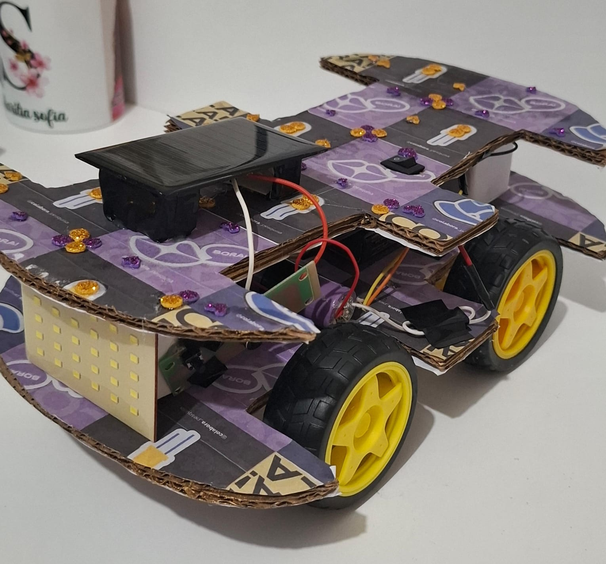

O projeto colabora:
O colabora é um projeto que incentiva mulheres e meninas do E. Médio e E. Superior à participarem da área do STEM, aprendendo e estudando sobre diversas engenharias e montando projetos como este que apresentamos. Dirigido pela professora Andrea e outros 77 contribuintes, este projeto inspirado no Tecnovvationgirls Somos meninas de ensino superior e do ensino médio, querendo monstrar uma engenharia mais verde e motivar meninas a entrarem em áreas da ciência, tecnologia, engenharia e matemática (STEM), motivadas com isso tivemos a ideia de fazer esses dois carrinho.
Nosso projeto foi idealizado para ter uma prosposta reciclável, por isso fizemos um carro movido a energia solar e outro usando o processo de eletrólise!